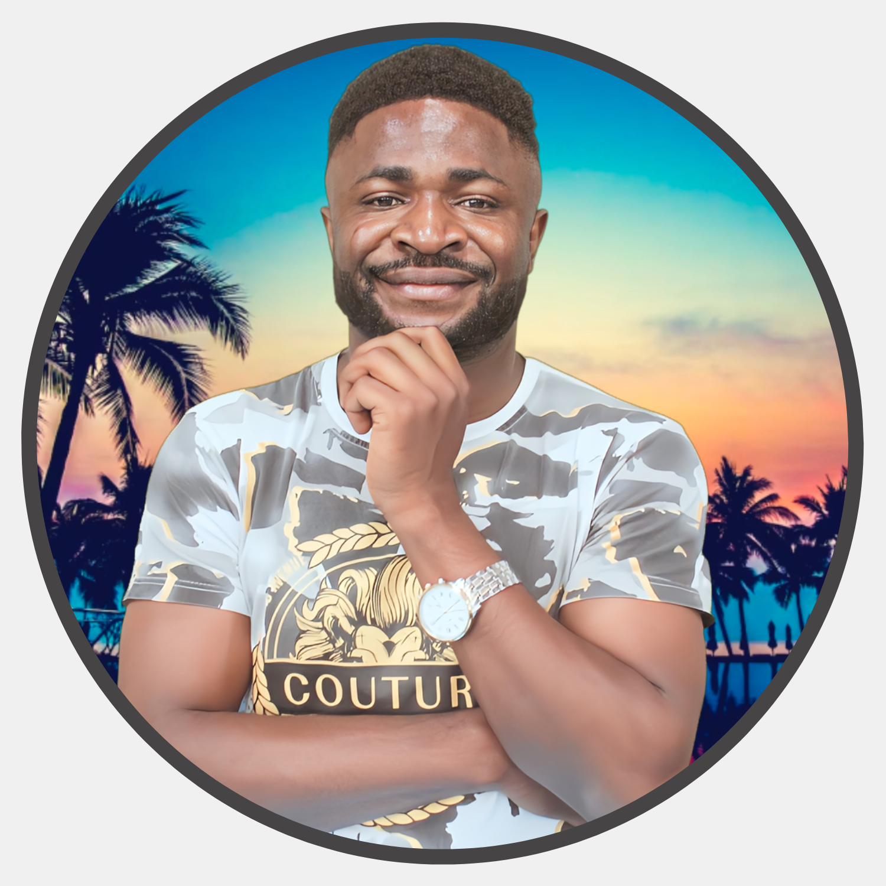

Chounna Yemele Gergino
Environmental Engineer and Researcher.
Address: Padova, Italy
Advocacy and Social Engagement
- 2024|2025 – Arqus Alliance Ambassador : As ambassadors, we are a point of contact for other students who are interested in learning more about the Alliance and its programs. The program aims to promote the values of the Arqus Alliance and engage with other students, staff, and members of local communities.
- 2024|Present – GWYN’s Chair of Communication : I manage communications for the UNESCO Groundwater Youth Network (GWYN), a global platform of 1900 young groundwater professionals advocating for sustainability and youth representation at international summits. As part of a 10-member communication team, we provide information sharing, youth opportunities, and quarterly newsletters for GWYN members.
- 2024 – RWSN Mentoring program – Mentored young water professionals under the Rural Water Supply Network (RWSN) mentoring programs.
- 2022|Present – RWSN Representative : Since 2022, I have represented the Rural Water Supply Network (RWSN) organisation at the Steering Committee of the GWYN. RWSN comprises over 15,000 individual members and 100 member organizations dedicated to enhancing access to drinking water in rural areas worldwide.
- 2022|Present – GWYN representative : As a steering committee member of GWYN, I represent the network in multiple young and scientific activities. We hold monthly meetings, plan the strategic vision of the network, and implement it. Between 2022 and 2024, I was also the Africa regional lead of the network, where I aimed to create awareness on the importance of groundwater in our regional areas. As a young rapporteur and moderator for a session and side event, respectively, during the UN Groundwater Summit 2022.
- 2022|Present – Scholarship guidance : Provides scholarship and fellowship application guidance to university students and young professionals willing to find a scholarship.
- 2016|2020 – Model Initiative for Africa (MIA) : Teach basic chemistry to more than 600 students preparing for entrance into professional schools.STEM Mentor: Mentored High School Science students and university students for scholarship applications.
- 2015|2021 – Environmental Engineering Club of NASPW : GIS Trainer (2021); Trained environmental engineering students on the use of GIS tools. Communication manager (2018); plan and manage the communication of the club within the university. Organised environmental conferences to create awareness within the university.